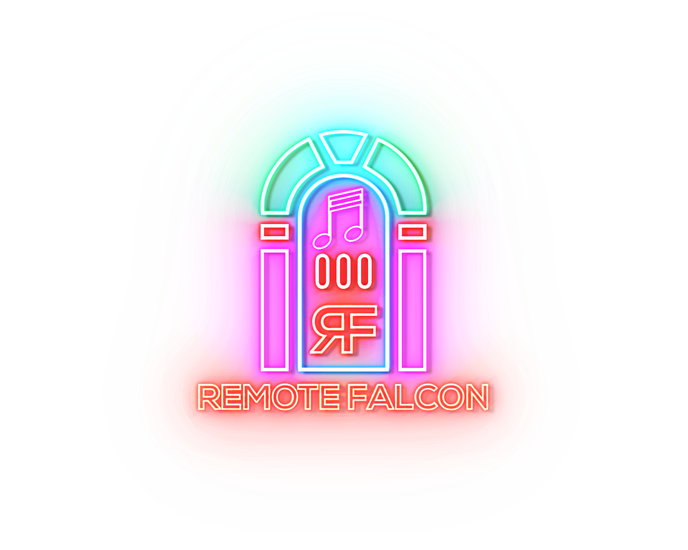

Remote Falcon allows your viewers to take control of your light show in order to provide an immersive and interactive experience.

From the first vote to the final song, give your viewers a reason to come back every night.
Pick the mode that fits the night — viewers either request the next song (Jukebox) or vote on what plays (Voting).
Start from a template, or write your own HTML/CSS. The editor validates your markup as you go.
Opt in to the global Remote Falcon shows map and let viewers discover light shows nearby.
Free to get started, open source for anyone to audit or contribute, and supported by a community of show owners helping each other.
Sign in to manage your show, sequences, and viewer page.
Sign up and start taking song requests in minutes.